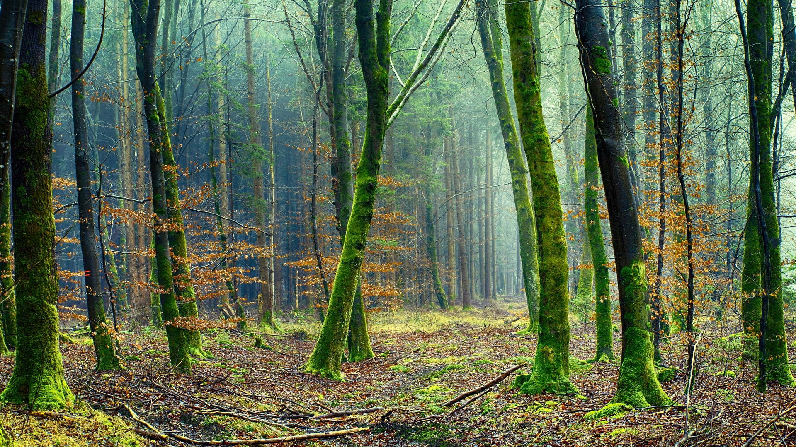

EDUCAÇÃO
AMBIENTAL
Sustentabilidade Ambiental:
Uma Prioridade para um Futuro Melhor
Na era atual, a conscientização sobre a importância da preservação do meio ambiente nunca esteve tão presente na sociedade.
A busca por soluções sustentáveis tornou-se uma responsabilidade compartilhada entre empresas, governos e cidadãos.
Neste cenário, a Ambient`s, comprometida com um futuro mais verde e próspero, assume o papel de liderança na promoção da
sustentabilidade ambiental.